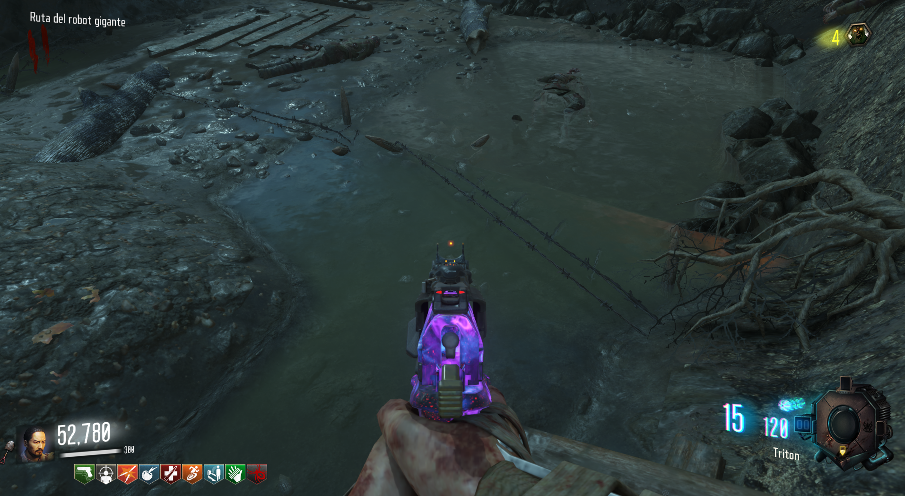
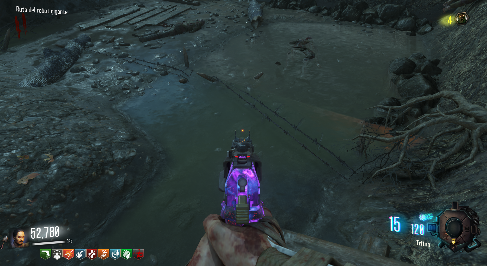

Mortero (Origins)
Para conseguir los morteros deberemos de ir a Tank Station y obtener una piedra de la mesa. (cada jugador deberá de repetir estos pasos si quiere los morteros).
La llevaremos al lavadero de la iglesia y la pondremos en el agua.
Tendremos que matar zombies CaC (recomiendo tener los puños) para limpiar la piedra.
Hecho esto llevaremos la piedra de nuevo a la mesa de Tank Station, pero no podremos caminar encima del agua sucia o barro.

Al llegar y poner la piedra en la mesa, tendremos que volver a matar CaC.
Cuando terminemos, los morteros aparecerán en la mesa.

La llevaremos al lavadero de la iglesia y la pondremos en el agua.
Tendremos que matar zombies CaC (recomiendo tener los puños) para limpiar la piedra.
Hecho esto llevaremos la piedra de nuevo a la mesa de Tank Station, pero no podremos caminar encima del agua sucia o barro.

Al llegar y poner la piedra en la mesa, tendremos que volver a matar CaC.
Cuando terminemos, los morteros aparecerán en la mesa.